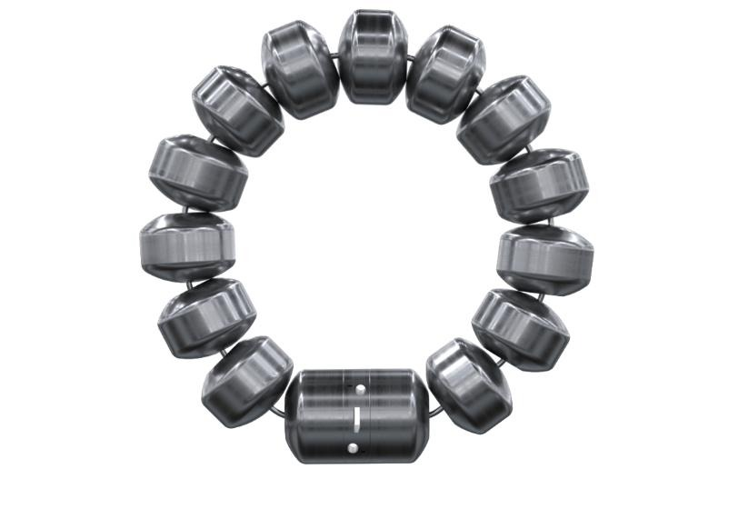
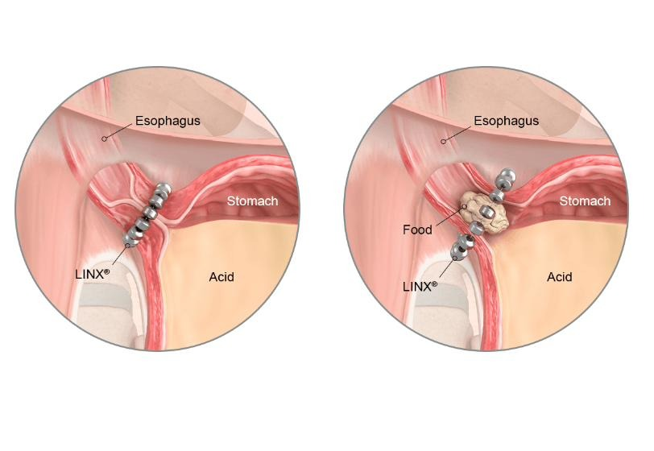

The product had been acquired from Torax Medical, a separate company with its own engineering history, its own FMEAs, and its own way of documenting risk. Bringing it under J&J's quality system meant more than paperwork, the risk documentation had to reflect one coherent, defensible system, not two companies' worth of independent assumptions stitched together. This device is also Class III, the FDA's highest scrutiny tier, reserved for products that support or sustain human life, which raised the stakes on getting every step right.
Started by pulling both sets of risk documentation side by side: J&J's own FMEA framework, and the original FMEAs Torax Medical had built for the device before the acquisition. The two companies didn't structure risk the same way, so the first task was purely comparative, going line by line to map exactly where the frameworks diverged, which failure modes were captured differently, and what had meaningfully changed in the years since Torax first wrote theirs.
Before touching a single risk line, I had to actually understand the device inside and out, not just what the FMEA said about it. That meant working through CAD drawings to understand the physical design, reading through years of customer complaints to see how the device actually failed in the field, watching surgical implantation videos to understand the clinical procedure itself, and reviewing DVT (design verification testing) reports to see what had already been proven and what hadn't. The goal was to know the product well enough that I could sanity-check the paperwork, not just transcribe it.
With that grounding in place, I started building out the merged FMEA, filling in every risk, failure mode, and control I could confidently document based on the product knowledge and history I'd just spent time absorbing. This was the more straightforward half of the work: applying what was already knowable and getting it correctly documented in J&J's format.
The harder half was everything that wasn't already answered, including something as fundamental as how to actually run some of the required risk calculations. There isn't one universal method here: the Six Sigma approach and Torax's own original approach calculate and weight risk differently, and each comes with real tradeoffs in rigor, assumptions, and how conservative the output is. I had to understand the pros and cons of both before choosing, and ultimately went with whichever method produced the highest level of patient safety, not the one that was fastest or most convenient to apply.
A risk mitigation isn't real until it's backed by evidence, so the next phase was almost entirely cross-functional. I worked directly with packaging, commercial education, marketing, R&D, and other teams to track down and attach the actual supporting documentation behind each FMEA line, proof that a labeled risk had a real, verifiable mitigation step behind it, not just a claim.
Once the merged FMEA was complete and every risk mitigation was documented and traceable back to its source, the full package went through internal leadership review, followed by regulatory approval, before being finalized as the product's official quality system.
Because this is a Class III device, the next step beyond internal approval is formal submission to the FDA, the highest scrutiny tier in the regulatory process, reserved for devices that support or sustain human life.


A 300-trigger performance study on porcine tissue, run to get to the bottom of a customer complaint trend on a tissue sealer device.
Identified and understood the customer complaint trend, what was actually being reported, and where in the process it was likely originating.
Defined what we were actually measuring and the acceptance criteria for Cpk, set the LSL and USL, and established clear pass/fail benchmarks before any testing began.
Developed the test protocol: number of operators, sample size, trials per operator, test conditions, which tissue to use, a training manual so different operators could run it consistently, and the datasheet to capture it all.
Had operators execute the protocol, then ran the full statistical analysis in Minitab, establishing a Cp/Cpk of 1.5 and eliminating the trigger mechanism as the root cause.
Facilitated an internal audit across 6 labs, identifying 4 nonconformances and recommending corrective actions to close compliance gaps and prevent recurrence.